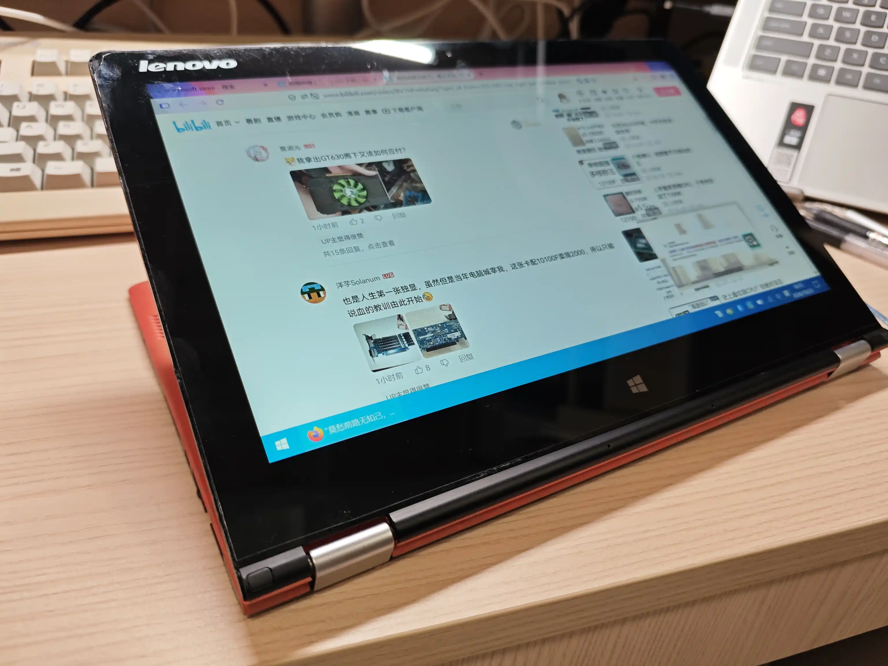
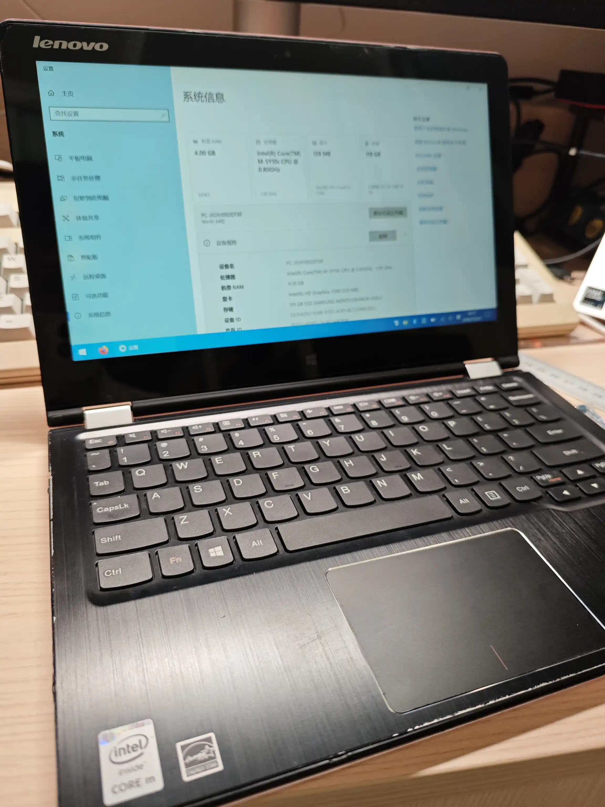
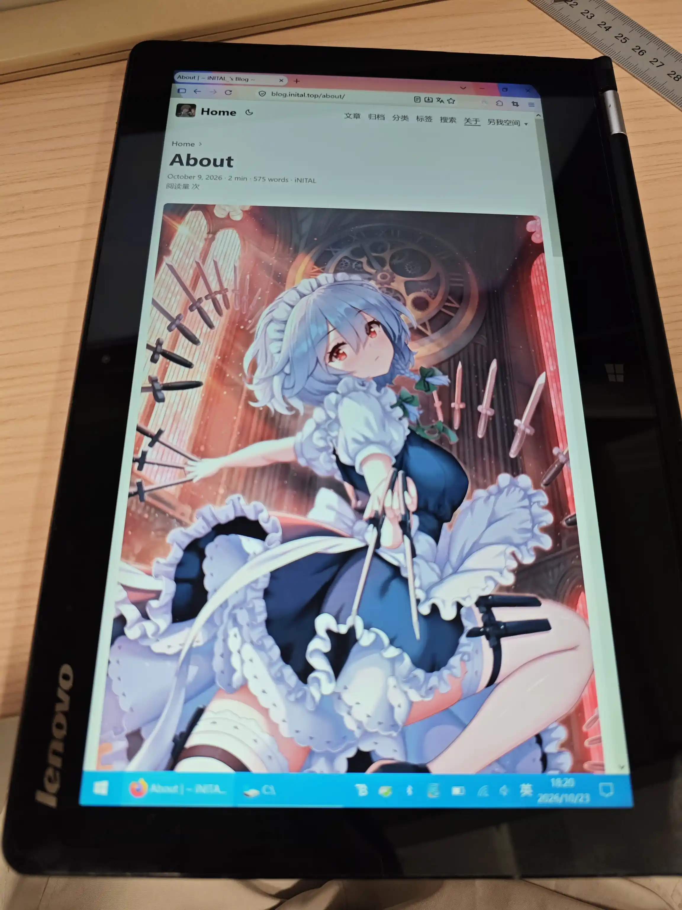
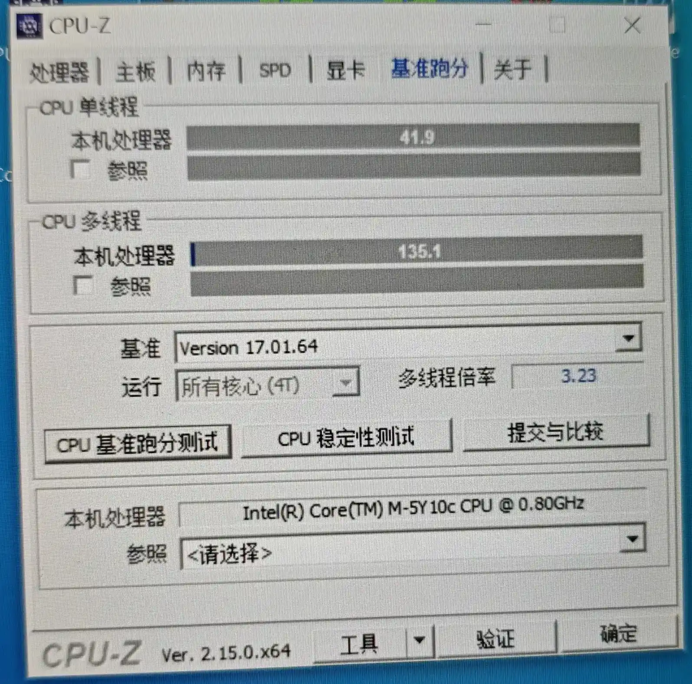
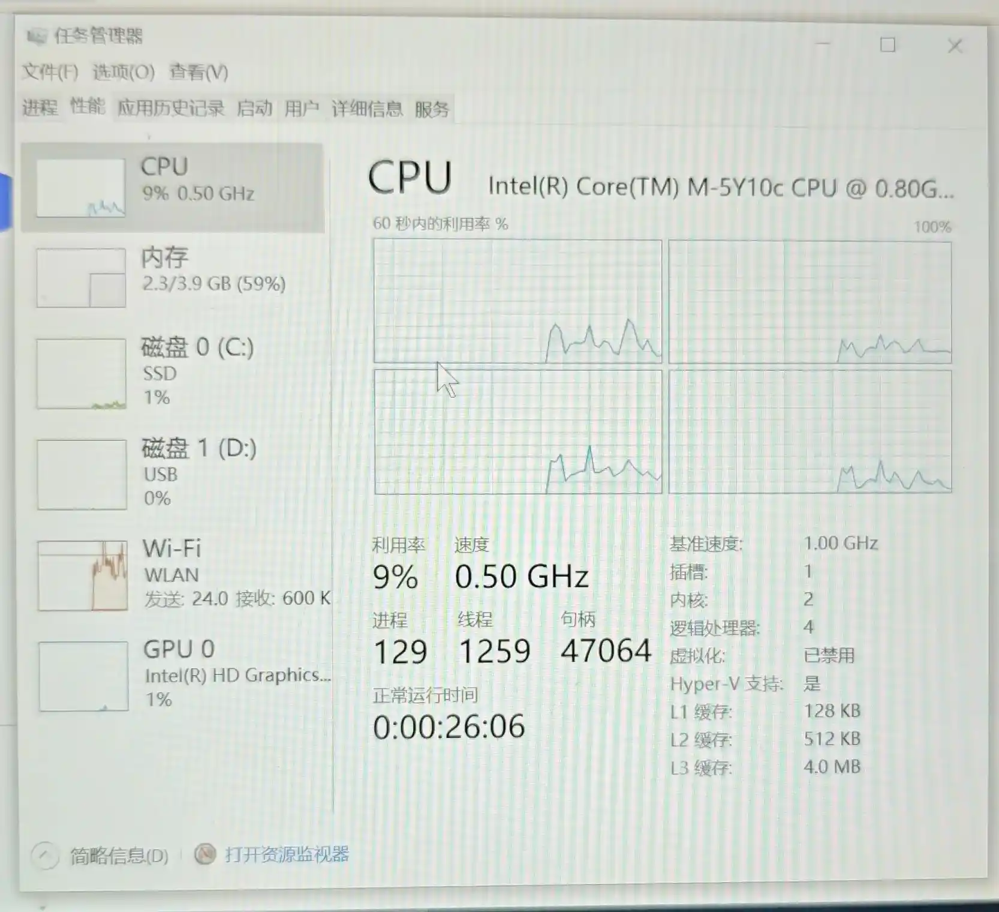
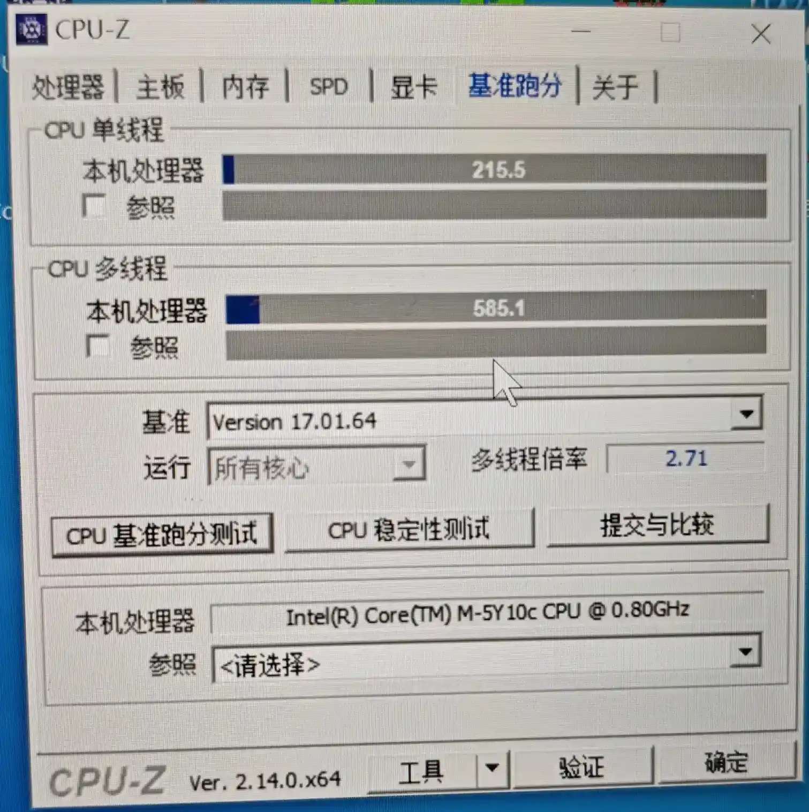
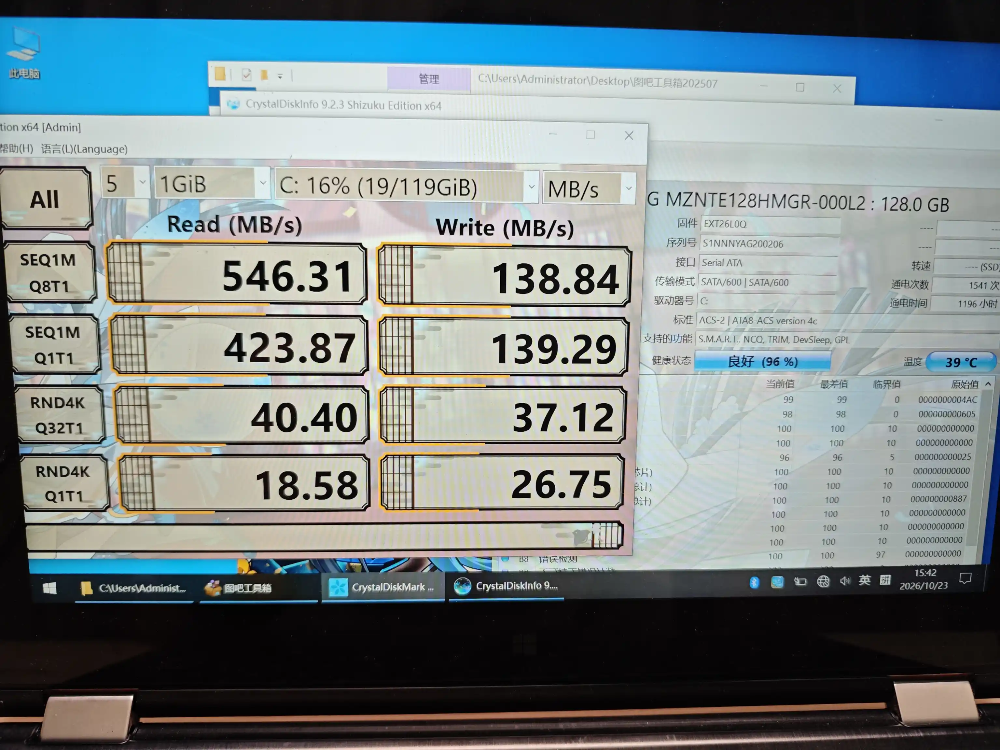
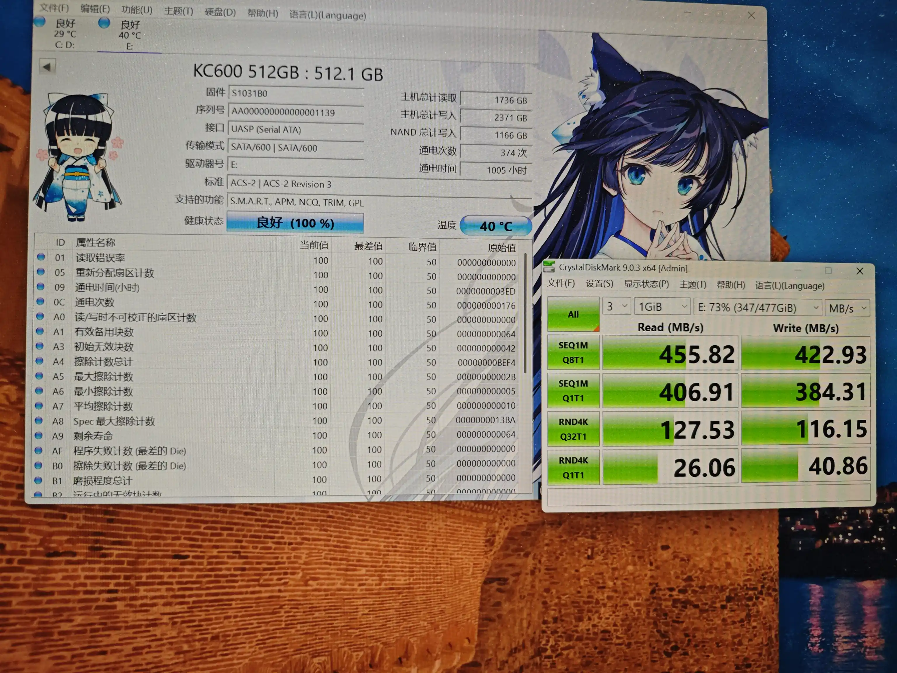

起源
本来，这种 Windows 平板一百来块钱也是比较平常的价格吧。毕竟前段时间顶配的小米平板 2 也就 100 来块前。如果预算加到 200 到 300，还能买到最低配的 ThinkPad X1 Tablet。
但是折腾过 ThinkPad X1 Tablet 的人都知道（这里就留个坑吧），这玩意儿的发热很离谱，完全就可以当作暖手宝。而且这台机器的自带键盘虽然在同类产品中很优秀，但是故障率很高，排线很容易断，故 DIY 键盘的相关产品比较多。虽然 X1 Tablet 本体不贵，但是作为一台 ThinkPad，键盘才是灵魂，100+才能买到能用的键盘，这实在让人难以接受。
如果你用过 Intel Atom 相关的产品的话，你又绝对会对其机器孱弱的性能印象深刻（当然，在我心目中，ARM 才是 Windows 平台 CPU 的下水道）。而且，小米平板 2 毕竟是个平板，接口数量很少，传输数据，外接键盘什么的还是很麻烦的。（当然，这类机器的本职一般就是玩 Galgame 而已）
当然，上述两条理由还不足以我捡这种垃圾。平时看到的 170 元的都是带 64g 的硬盘，但是这次，是带 128g 的硬盘，这就挺不错的。虽然成色看着一般，但是硬盘就能回将近一半的本，不亏。于是就果断下单了。
外观
比想象中更厚，更重一些（从平板的角度来看，1.1kg 确实不太适合握持，还是在桌面上立着更好）。而且尺寸也挺大的，量了下将近 14 寸。
形态就和印象中的 YOGA 一样，随便变换。作为一台 2014 年的电脑，屏轴还是非常稳定，阻尼感很不错。



整体橘色的漆面还是挺好看的，现在的笔记本电脑在配色上确实没有以前那么多样了。不过上边的特殊涂层时间长了比较粘手，也算是通病了。
键盘，因为是 14 寸的本子嘛，所以也都是全尺寸的，而且方向键也不是那种“全高 + 半高”的恶心组合，还是不错的。但是键程极短，敲下去手感很差。只能算及格。
配置
CPU & GPU
反正是核显，所以就一块儿讲了。
一开始 CPU-Z 测下来的图如下：

然后急忙转头看了下任务管理器：

很明显，锁频了，而且给我锁到 0.5GHz 去了。人都傻了，长这么大，还真没见过 0.5GHz 的 CPU，都是图拉丁赛扬起步的。（当然，Book 8088 不算）
然后关了功耗墙，我还以为发热多大呢。满载都撞不到 80 摄氏度，你降什么主频？满载 7w 顶天，从续航角度上也没有任何帮助。
然后就正常多了：

这个分数，实际上也就能正常使用了呢。搭配五代酷睿的核显，玩玩东方 Project 相关的 STG 绰绰有余。解码 4k 也不算难事。在我捡的一众垃圾中，实用性还是可以的。
跑原机主装的精简 Windows 10 22H2 一点都不卡。
内存
4g DDR3，板载。没太多好说的。内存不多，但是也不构成瓶颈。
硬盘
重头戏，这可是我买这台电脑的一大原因。
2014 的笔记本，带 m.2/NGFF 插槽确实很唬人。不过猜一猜都能想到，是 msata。不过，就算是 msata，一块 128g 的三星二手价格也在 80 多，很可以了。


作为一块早年的 msata，可以看出在随机读写，顺序读入等方面都可谓一塌糊涂。这个随机读写总觉得还打不过一些杂牌 sata。不过再怎么说也是个固态，肯定比机械快很多的。
网卡
非常垃圾的 Intel AC3160，虽然是可更换 m2 插槽，但是由于白名单限制，升级不了 AX200 之类的主流网卡。而且，YOGA 系列也不像 ThinkPad 系列那样有庞大的 DIY 社区，没有破解的 BIOS。
但是，极限速度只能跑到 10 Mbps 的网卡，真的，不可饶恕，最主要你也没有以太网接口啊。这下拿来看 Bilibili 都没法开三倍速看视频了。
屏幕
在 2014 年，那个 1366 * 168 的 TN 屏还是大多数的时代，这块 11 寸的 1920 * 1080 的 IPS 触摸屏确实让人眼前一亮。虽然 45% NTSC 在如今已被列入垃圾屏幕的行列（当然，如今很多厂商的低端产品依旧是 45% NTSC）
说实话，分辨率没必要再高了，11 寸上 1080p 的显示已经很细腻了。
但是，你是一台将近 14 寸的笔记本啊？你就塞了个 11 寸的屏幕？
我自认为是个不在意屏占比的人，但是你左右边框都 1.5cm 了，下边框更是来到惊人的 2cm（这下真是“惊掉下巴”了）。我寻思 Tablet PC 时代的远古 Windows 平板也不至于如此吧？真的看什么都觉得很小。
而且作为一个平板，16:9 的比例真的很不合适，横着太宽，竖着又一长条，很不好用。
摄像头
支持 720p 视频，中规中矩。考虑到这台机器在角度调节上比较自由，以后拿来做拍摄设备也不是不行。
接口
作为一台定位轻薄的笔记本，给的接口可谓大方：
- USB-A 3.0 * 1
- USB-A 2.0 * 1
- mini-HDMI * 1
- 3.5mm 耳机口
- USB-A 充电口（我这辈子也是第一次见到 A 口的充电口）
- 全尺寸 SD 卡槽（这个还是挺意外的）
另外，侧边还集成了一些按键：
- 音量 +/-
- 开机键
- 旋转 锁定/解除锁定
- reset 键
还是挺实用的。就是缺少个 USB-C，用不了我现成的拓展坞，不过毕竟是 2014 年的机器，没有 C 口也正常。
续航
电池健康度 80%，加上 Core M 系列堪比 Atom 的功耗，续航能达到 2-3 个小时甚至更长，还是很意外的。
换网卡！
虽然有白名单限制，但是更换同机型顶配网卡还是可以的。虽然依旧不咋地，但是速度理论上是比原来快一倍的。
博通 BCM94352Z，要 m.2/NGFF 插槽版本的，而且还必须是联想的（戴尔和惠普的不行），FRU 必须为 04X6020（别的备件号不行），条件可谓苛刻。不过这样网卡本身还是挺熟悉的，著名的黑苹果网卡。
18 元包邮，实际上觉得有点小贵，毕竟一张 AX200 也就 30 左右。
备件还没到，过几天再更新吧~